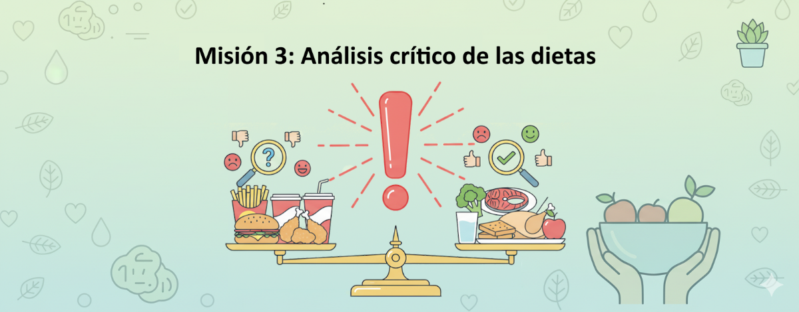

🕵️♀️ Análisis crítico de las dietas
🎯 Objetivo: comprobar si la dieta que encontrasteis en internet cumple los criterios de alimentación saludable que descubristeis en la Misión 2.
👥 Trabajo en parejas:
Usad la tabla de características de dieta saludable que completasteis en la Misión 2. Para cada criterio, observad la dieta y decidid si lo cumple o no.
💡 Qué harás:
-
Revisar las dietas encontradas en la Misión 1.
-
Tomar cada característica de la dieta saludable.
-
Evaluar si la dieta cumple o no esa característica.
-
Justificar vuestra evaluación con ejemplos de la dieta.
-
Registrar toda la información en la tabla de análisis.